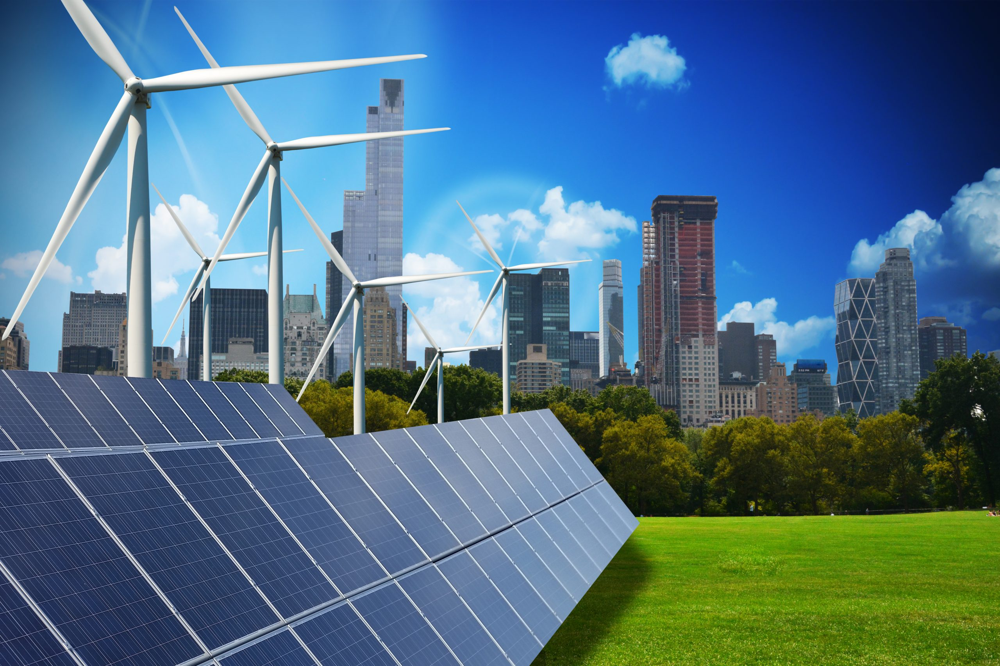
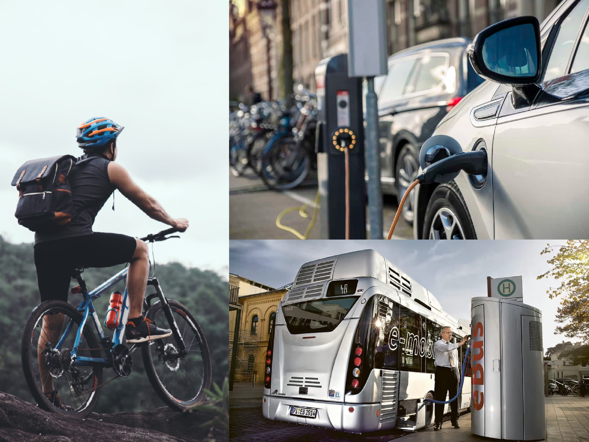

Climate action refers to the efforts taken by individuals, organizations, and governments to reduce greenhouse
gas emissions and mitigate the impacts of climate change. This includes transitioning to renewable energy
sources, increasing energy efficiency, and adopting sustainable practices in transportation, land use, and waste
management. Climate action also involves adapting to the already changing climate by building resilience in
communities, protecting natural habitats, and supporting climate-resilient agriculture. The goal is to limit
global warming to 1.5°C above pre-industrial levels and avoid the most catastrophic effects of climate change,
requiring a collective and coordinated effort to reduce emissions and adapt to the changing climate, ensuring a
sustainable future for all.
Necessary Steps for Climate Action
Plant Trees:
Every year approximately 12 million hectares of forest are destroyed and this
deforestation, together with agriculture and other land use changes, is responsible for roughly 25 per
cent of global greenhouse gas emissions. We can all play a part in reversing this trend by planting
trees, either individually or as part of a collective. For example, the Plant-for-the-Planet initiative
allows people to sponsor tree-planting around the world.
Check out this UNEP guide to see what else you can do as part of the UN Decade on Ecosystem Restoration,
a global drive to halt the degradation of land and oceans, protect biodiversity, and rebuild ecosystems.
Focus on planet-friendly investments:
Individuals can also spur change through their savings and
investments by choosing financial institutions that do not invest in carbon-polluting industries.
#ActNow Speak Up has a section on money and so does Count Us In. This sends a clear signal to the market
and already many financial institutions are offering more ethical investments, allowing you to use your
money to support causes you believe in and avoid those you don’t. You can ask your financial institution
about their responsible banking policies and find out how they rank in independent research.
UNEP is at the front in support of the Paris Agreement goal of keeping the global temperature rise well
below 2°C, and aiming - to be safe - for 1.5°C, compared to pre-industrial levels. To do this, UNEP has
developed a Six-Sector Solution. The Six Sector Solution is a roadmap to reducing emissions across
sectors in line with the Paris Agreement commitments and in pursuit of climate stability. The six
sectors identified are Energy; Industry; Agriculture & Food; Forests & Land Use; Transport; and
Buildings & Cities.

Spread the word:
Encourage your friends, family and co-workers to reduce their carbon
pollution.
Join a global movement like Count Us In, which aims to inspire 1 billion people to take practical steps
and challenge their leaders to act more boldly on climate. Organizers of the platform say that if 1
billion people took action, they could reduce as much as 20 per cent of global carbon emissions. Or you
could sign up to the UN’s #ActNow campaign on climate change and sustainability and add your voice to
this critical global debate.
Keep up the political pressure:
Lobby local politicians and businesses to support efforts to
cut
emissions and reduce carbon pollution. #ActNow Speak Up has sections on political pressure and corporate
action - and Count Us In also has some handy tips for how to do this. Pick an environmental issue you
care about, decide on a specific request for change and then try to arrange a meeting with your local
representative. It might seem intimidating but your voice deserves to be heard. If humanity is to
succeed in tackling the climate emergency, politicians must be part of the solution. It’s up to all of
us to keep up with the pressure.
Transform your transport:
Transport accounts for around a quarter of all greenhouse gas
emissions
and across the world, many governments are implementing policies to decarbonize travel. You can get a
head start: leave your car at home and walk or cycle whenever possible. If the distances are too great,
choose public transport, preferably electric options. If you must drive, offer to carpool with others so
that fewer cars are on the road. Get ahead of the curve and buy an electric car. Reduce the number of
long-haul flights you take.

Rein in your power use:
If you can, switch to a zero-carbon or renewable energy provider.
Install
solar panels on your roof. Be more efficient: turn your heating down a degree or two, if possible.
Switch off appliances and lights when you are not using them and better yet buy the most efficient
products in the first place (hint: this will save you money!). Insulate your loft or roof: you’ll be
warmer in the winter, cooler in the summer and save some money too.
Tweak your diet:
Eat more plant-based meals – your body and the planet will thank you. Today,
around 60 per cent of the world’s agricultural land is used for livestock grazing and people in many
countries are consuming more animal-sourced food than is healthy. Plant-rich diets can help reduce
chronic illnesses, such as heart disease, stroke, diabetes and cancer.
Shop local and buy sustainable:
To reduce your food’s carbon footprint, buy local and seasonal
foods. You’ll be helping small businesses and farms in your area and reducing fossil fuel emissions
associated with transport and cold chain storage. Sustainable agriculture uses up to 56 per cent less
energy, creates 64 per cent fewer emissions and allows for greater levels of biodiversity than
conventional farming. Go one step further and try growing your own fruit, vegetables and herbs. You can
plant them in a garden, on a balcony or even on a window sill. Set up a community garden in your
neighbourhood to get others involved.